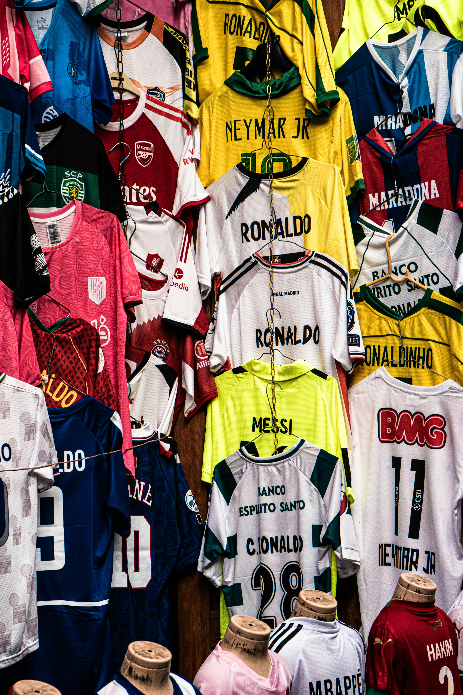

球队
- 皇家马德里 --- 核心荣耀：15次欧冠冠军（历史第一）、36次西甲冠军、20次国王杯、6次欧洲超级杯、5次世俱杯；20世纪最伟大俱乐部。
- 巴塞罗那 --- 核心荣耀：5次欧冠冠军、28次西甲冠军、32次国王杯（历史第一）、5次欧洲超级杯、3次世俱杯；2009年足坛首支六冠王。
- 拜仁慕尼黑 --- 核心荣耀：6次欧冠冠军、34次德甲冠军（11连冠纪录）、20次德国杯、2次欧洲超级杯、4次世俱杯；2020年六冠王。
- 利物浦 --- 核心荣耀：6次欧冠冠军（英格兰第一）、20次英格兰顶级联赛冠军、8次足总杯、10次联赛杯、4次欧洲超级杯、1次世俱杯。
- 曼彻斯特联 ---核心荣耀：3次欧冠冠军、20次英格兰顶级联赛冠军、13次足总杯、6次联赛杯、21次社区盾杯；1999年三冠王。
- AC米兰 ---核心荣耀：7次欧冠冠军（历史第二）、19次意甲冠军、5次意大利杯、5次欧洲超级杯、4次世俱杯/洲际杯。
- 切尔西 --- 核心荣耀：2次欧冠冠军、6次英格兰顶级联赛冠军、8次足总杯、5次联赛杯、2次欧洲超级杯、2次世俱杯；首支欧战全满贯球队。
- 尤文图斯 --- 核心荣耀：2次欧冠冠军、36次意甲冠军（历史第一）、14次意大利杯、9次意大利超级杯、3次欧洲超级杯、2次世俱杯。